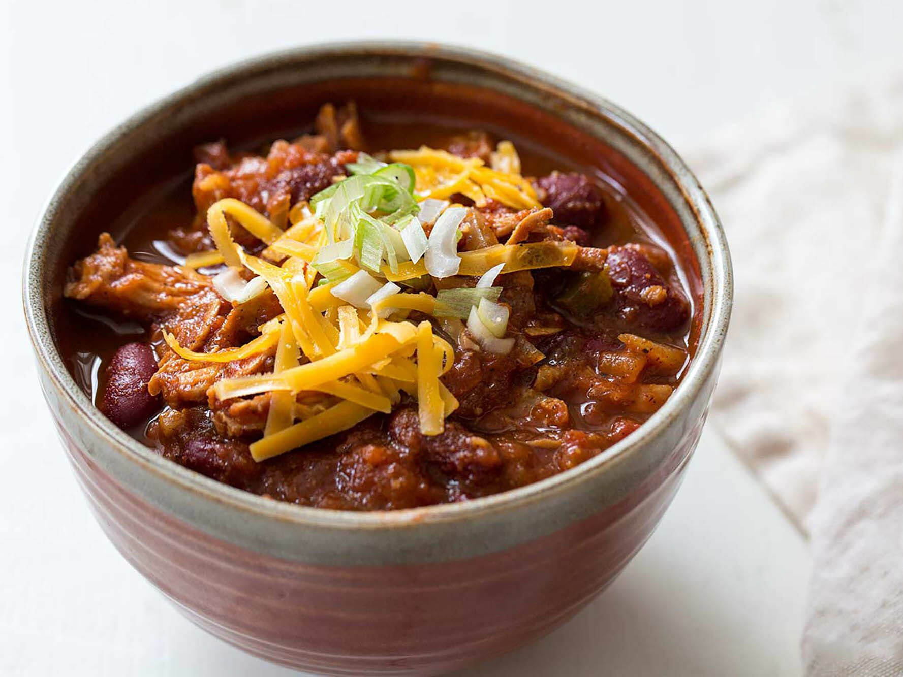

Turkey Chili

This recipe, Luby's Healthier Turkey Chili is taken from www.allrecipes.com and is very easy to prepare and can be stored for multiple meals after!
Ingredients
- 5 slices turkey bacon, chopped
- 2 tablespoons extra-virgin olive oil
- 1 large onion, chopped
- ½ purple sweet pepper, chopped
- ½ white sweet pepper, chopped
- ½ red and yellow striped bell pepper (such as Enjoya®), chopped
- 2 pounds ground turkey
- 1 (28 ounce) can crushed tomatoes
- 2 (15 ounce) cans pinto beans, rinsed and drained
- 1 (16 ounce) can black beans, rinsed and drained
- 1 (6 ounce) can tomato paste
- 2 cups chicken broth
- 2 cups chicken broth
- 2 cups chicken broth
- 2 cups chicken broth
- 2 cups chicken broth
Steps
- Place turkey bacon in a large pot and cook over medium-high heat, turning occasionally, until evenly browned, about 10 minutes. Drain bacon on paper towels.
- Heat oil in the same pot over medium-high heat. Add onion and sweet peppers; cook until they just start to turn brown, 7 to 8 minutes. Add ground turkey and cook until lightly browned, about 5 minutes. Stir in cooked bacon, crushed tomatoes, pinto beans, black beans, tomato paste, chicken broth, quinoa, chili powder, cumin, and cayenne.
- Reduce heat to low and let simmer, adding water if it becomes too dry, 1 to 4 hours.
Return To Home Page